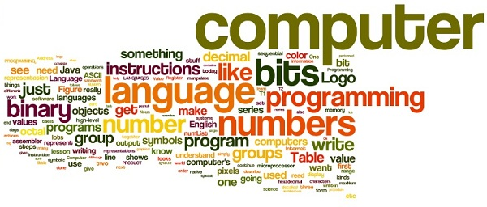

Beroep
Een programmeur, computerprogrammeur, developer, dev, coder of software engineer is een persoon die computersoftwares schrijft. De term computerprogrammeur kan verwijzen naar een specialist in een gebied van computerprogrammering of naar een generalist die code voor vele soorten software schrijft. Iemand die praktijken of beweert een formele aanpak van programmeren kan ook worden aangeduid als een programmeur-analist. Een programmer's primaire computertaal wordt vaak voorafgegaan aan deze titels (Assembly, COBOL, C, C++, C#, Java, Lisp, Python, etc.) en degenen die in een webomgeving vaak werken hun titels met Web voorvoegsel. De term programmeur kan worden gebruikt om te verwijzen naar een softwareontwikkelaar, webontwikkelaar, mobiele toepassingen ontwikkelaar, ingesloten firmware ontwikkelaar, software engineer, informaticus, of softwareanalist.
Echter, leden van deze beroepen beschikken over andere software engineering vaardigheden, buiten de programmering; om deze reden, de term programmeur wordt soms beschouwd als een beledigende of afwijkende versimpeling van deze andere beroepen. Dit leidde tot veel discussie onder ontwikkelaars, analisten, informatici, programmeurs en buitenstaanders die blijven verbaasd op de subtiele verschillen in de definities van deze beroepen.